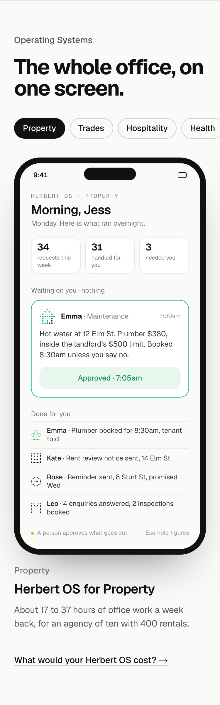
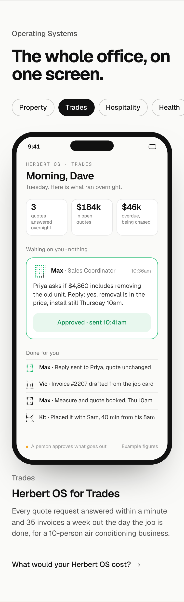
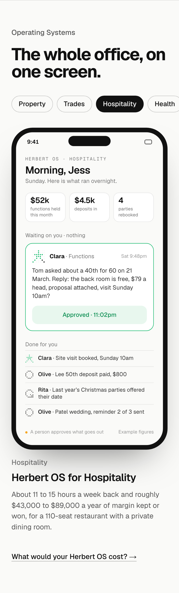
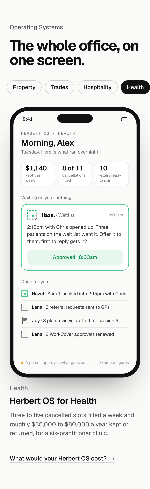
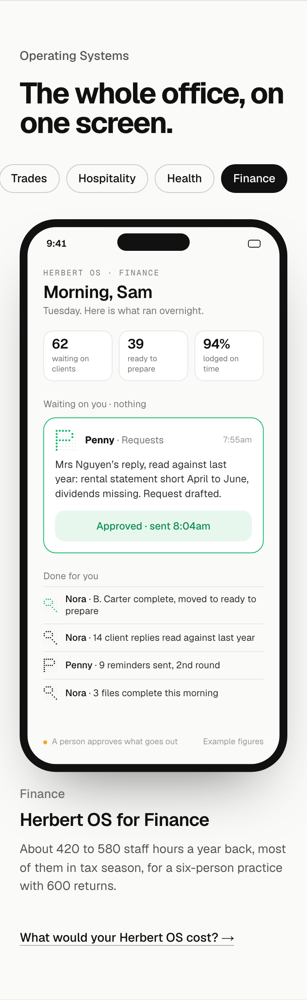
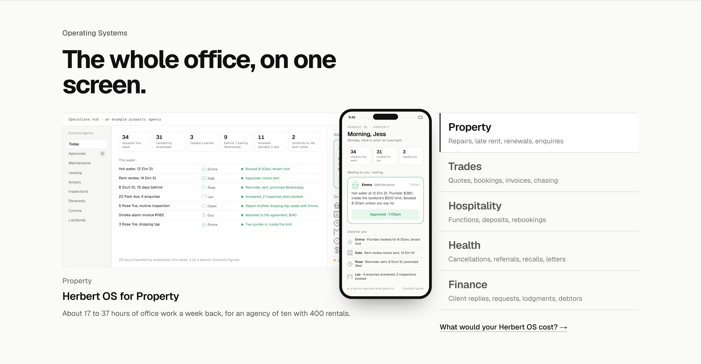
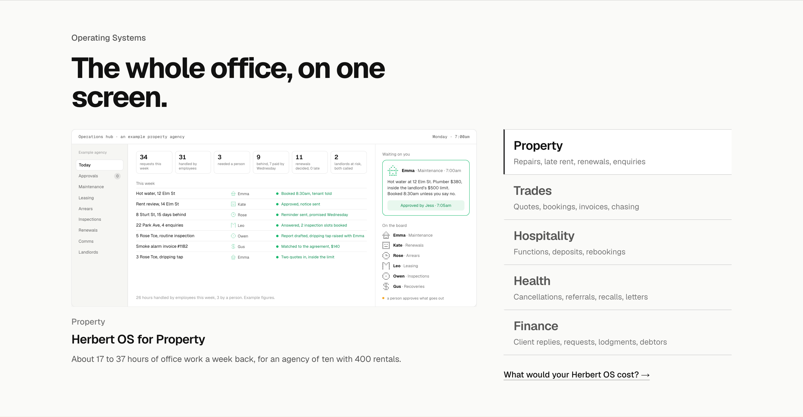

Property

On phones the section now shows the industries as pills and, under them, the phone version of that industry’s Herbert OS: the day’s numbers, the one thing waiting on the owner, and what was done for them, with the whole team visible. It plays once when an industry is tapped (the approval goes from amber to green and its outcome lands at the top). The close reads “What would your Herbert OS cost?”. Each shown at 375, finished state. Every name and figure is made up.
Property

Trades

Hospitality

Health

Finance

Whether the phone version also shows on a laptop, over the screen’s corner, so a laptop visitor sees they can run it from their phone. First the option, then the laptop as built (no phone).
Option: the phone over the screen’s corner

As built: the laptop screen only
